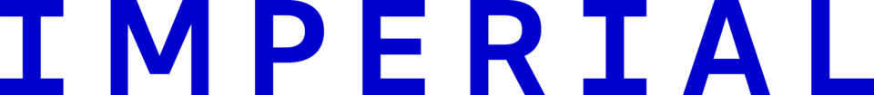
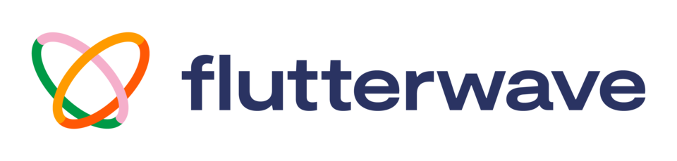
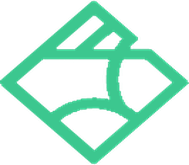
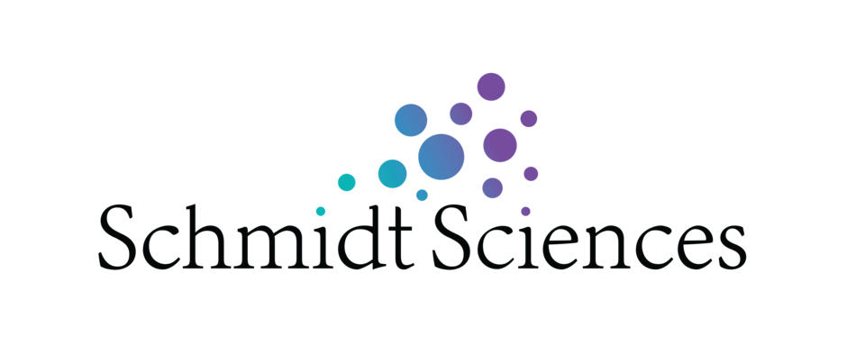
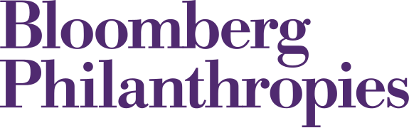
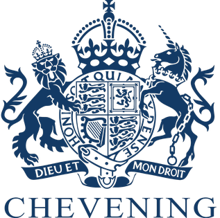

ng-flood
Flood forecasts for any place in Nigeria.
GitHubKayode Adeniyi. I build AI and sensing systems that show how far their answers can be trusted. PhD researcher, Imperial College London.
Studied and worked at


The question behind the work
Floods where there are no gauges
AI in Yoruba, Hausa and Igbo
Real numbers, right units
Governments preparing for AI
Work
Flood forecasts for any place in Nigeria.
GitHubWarnings built from residents’ reports.
GitHubA faster model for Yoruba, Hausa and Igbo.
GitHubRiver and flood data for AI agents.
GitHubWhy some AI scores stay misleading.
Flood mapping for rice farmers.
ReportAbout




Contact